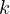
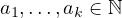
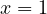
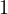
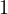
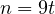
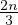
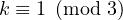
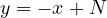
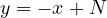

. This value I will
denote as . I will establish a lower and an upper bound on this
value for any . The lower bound, as you will see, is extremely
simple to establish; a far more complex problem is establishing an upper
bound.
. This value I will
denote as . I will establish a lower and an upper bound on this
value for any . The lower bound, as you will see, is extremely
simple to establish; a far more complex problem is establishing an upper
bound.
Here, I would like to discuss the problem of minimizing the LCM of a sequence of
 distinct integers given their exact sum to be . This value I will
denote as . I will establish a lower and an upper bound on this
value for any . The lower bound, as you will see, is extremely
simple to establish; a far more complex problem is establishing an upper
bound.
Consider the following problem, listed in the shortlist for IMO 2022, as an example of where this function has been used.
Question 1. A number is called Norwegian if it has three distinct positive
divisors whose sum is equal to 2022. Determine the smallest Norwegian number.
(Note: The total number of positive divisors of a Norwegian number is allowed
to be larger than 3.)
This problem is equivalent to calculating the exact value of , it is specifically this problem, which convinced me to generalize the concept.
Here, I will prove that the lower bound on the value of  is ,
along with the fact that this bound is tight.
is ,
along with the fact that this bound is tight.
Proof. Let us assume the opposite, that indeed, ,
then let be the  divisors of
(meaning, the
divisors of
(meaning, the  divisors, which sum to
divisors, which sum to  , from the definition), then we conclude,
that,
, from the definition), then we conclude,
that,
(1) |
 , thus it is impossible for there to be a strict less sign in the inequality,
contradiction. Thus, the inequality is indeed true. ■
, thus it is impossible for there to be a strict less sign in the inequality,
contradiction. Thus, the inequality is indeed true. ■
Notice that the lower bound on  gives something more interesting.
Obviously one can see that from this, one can conclude that,
gives something more interesting.
Obviously one can see that from this, one can conclude that,
| (2) |
is true for any , assuming that for no two we have . As a small example of the two equations, we get the following nice simple tricks, (given, that )
(3) (4) |
 , which is
.
, which is
.
 Analysis
AnalysisLet us try to calculate the precise value of  .
.
Theorem 3. Given  , that , the value of is ,
where
, that , the value of is ,
where  is the smallest divisor of
is the smallest divisor of  greater than
greater than  (this is achieved by
the partitioning,
(this is achieved by
the partitioning,  ).
).
Proof. Let us assume this is not the case, then it must hold, that, the partition
of  was into two parts and , where , and is the
greatest common denominator of the two numbers in the partition (consequently
). Notice, that , however, due to , one
can conclude that , thus . However, notice, that
is minimized, when and
was into two parts and , where , and is the
greatest common denominator of the two numbers in the partition (consequently
). Notice, that , however, due to , one
can conclude that , thus . However, notice, that
is minimized, when and  , but notice that even then,
, but notice that even then,
| (5) |
However, notice, that, if one considers the partition where  and , then the least common multiple will be the following,
| (6) |
Which is better, than than , consequently, it is always benificial to
make the partition of the form , thus, to minimize the least common
denominator, the value of  , must be minimized, in other words the
value of must be minimized, however this problem is equivelent to
maximizing
, must be minimized, in other words the
value of must be minimized, however this problem is equivelent to
maximizing  (note, that the maximized value of
(note, that the maximized value of  is represented as in the
statement). However, to simplify the statement, notice that maximizing
is represented as in the
statement). However, to simplify the statement, notice that maximizing  means minimizing , however must hold, for the partitioning to be
legal (e.i. the numbers would be distinct), consequently, one sees, that if
means minimizing , however must hold, for the partitioning to be
legal (e.i. the numbers would be distinct), consequently, one sees, that if  is the smallest divisor, such that , the value of
is the smallest divisor, such that , the value of  is exactly
is exactly
 . ■
. ■
Notice, that trivially (through simply considering the partitioning ),
 is at least bounded by , however through this theorem, we
understand that this bound is tight for prime values of
is at least bounded by , however through this theorem, we
understand that this bound is tight for prime values of  , thus proving, that
indeed, the upper bound is tight.
, thus proving, that
indeed, the upper bound is tight.
While this does indeed already tell us a lot, the function is bounded by two linear functions, consequently , however this does not tell the full story, the question that I will raise in this section, will be to find a function , such that,
| (7) |
In simple terms, a nice approximation of  in the form of a linear function,
. To start the analysis, I will perform a common trick, notice, that
in the form of a linear function,
. To start the analysis, I will perform a common trick, notice, that  from the previous theorem is a very hard function to work with, consequently to
eliminate any drastic changes in the value of the function, I propose analysing the
value of the following,
from the previous theorem is a very hard function to work with, consequently to
eliminate any drastic changes in the value of the function, I propose analysing the
value of the following,
| (8) |
Notice, that the problem of identifing the smallest divisor greater than 2, is not
extremely different from identifying the smallest prime divisor, this is due to the fact,
that the smallest divisor greater than 2, must be part of the set (in
other words, the union of  and the set of primes, greater than 2) let πn
represent the probability that the n-th special number is the minimal divisor greater
than 2, then, indeed, a recursive relationship holds (where sn is the n-th special
number),
and the set of primes, greater than 2) let πn
represent the probability that the n-th special number is the minimal divisor greater
than 2, then, indeed, a recursive relationship holds (where sn is the n-th special
number),
| (9) |
The last transition comes from,
(10) |
Now, all that is left, to reiterate the recursive relationship to obtain,
| (11) |
First of all, quick note, from this, one can conclude, that, πn ≤, which has as a direct biproduct,
| (12) |
Now, I shall return to the definition of  , to get, (where,
represents the smallest divisor, which is greater than 2 of
, to get, (where,
represents the smallest divisor, which is greater than 2 of  )
)
(13) |
The expectation is just a convienient way to rephrase the previous, assuming that
the random variable  is uniformly selected from  to . Thus, I propose
analysing that value,
is uniformly selected from  to . Thus, I propose
analysing that value,
| (14) |
One of the methods here, is to immediately write the last expression using the prime zeta function,
| (15) |
Thus, in the end, we have, that,
(16) |
However, I have found this result to not be precise enough, this is due to the rough approximation we make, for the value of , it far from accurate, I am referencing this specific moment in logic,
| (17) |
If one accounts for this error (I have not figured out a way here, to get a nice formula to simplify the last, thus I have simply calculated this with a computer),
| (18) |
From, one concludes, that,
(19) |
Thus, we have come to quite an accurate formula for , which is , let the constant be , then, one can conclude, the following,
(20) (21) (22) |
 , in other words, with
large values of
, in other words, with
large values of  , the approximate value is around
, the approximate value is around
 Case-wise Analysis
Case-wise AnalysisConsider the simplest and most elementary situation where . Now let one consider three situation for different possible congruences .
If , then an example of a 3-partition could be
(with the sum exactly  ) with a LCM of , where ,
consequently we achieve an upper bound on the value for to be
.
) with a LCM of , where ,
consequently we achieve an upper bound on the value for to be
.
If , analogously consider the example , again
where . As one can see, indeed the LCM is again  , thus
again an upper bound is achieved of .
, thus
again an upper bound is achieved of .
Finally, if , then , let us again consider the possible
congruences modulo  of
of  . (As you can see the work for now is quite
technical)
. (As you can see the work for now is quite
technical)
If , then  and an example of sets the upper bound of 
If , then works, due to
If , then works, due to if
Thus, indeed, one has established an upper bound on the value of to be .
It is important to note this bound is strict only for  large enough so that the
above examples work (the exact number after which the bound starts working will be
discussed a bit later). One can see the established lower and upper bound for the
values of ,
large enough so that the
above examples work (the exact number after which the bound starts working will be
discussed a bit later). One can see the established lower and upper bound for the
values of ,
However, this somewhat brute-force approach does not work for larger
values of  , in fact already just to find an upper bound for
, in fact already just to find an upper bound for  posses a harder problem than before. Thus, calculating an upper bound for
higher values of
posses a harder problem than before. Thus, calculating an upper bound for
higher values of  requires a different perspective. In fact it seems the
linear upper bound for while close, is not as tight as it was for
requires a different perspective. In fact it seems the
linear upper bound for while close, is not as tight as it was for
 .
.
I want to note, that the value of  is already to a large extend analysed,
one already knows from the previous theorems, that (whilst,
the upper bound is proven is a non-insightful fashion, it does not deminish the fact,
that the bound is proven).
is already to a large extend analysed,
one already knows from the previous theorems, that (whilst,
the upper bound is proven is a non-insightful fashion, it does not deminish the fact,
that the bound is proven).

I cannot say much, about the completely generalized concept, except for the fact,
that this problem is quite fundamental, if one thinks about it closer. Again, let us
take a closer look at how can one interpret the value of  . Let us interpret all
partitions of 2-partitions of
. Let us interpret all
partitions of 2-partitions of  , then one can easily come to see, that this is nothing
more, than all the lattice points of a line , thus if ,
this means, that for any line , there exists a lattice point, which is less
or equal to , this interpretation can be easily generalized for larger
dimensions.
, then one can easily come to see, that this is nothing
more, than all the lattice points of a line , thus if ,
this means, that for any line , there exists a lattice point, which is less
or equal to , this interpretation can be easily generalized for larger
dimensions.